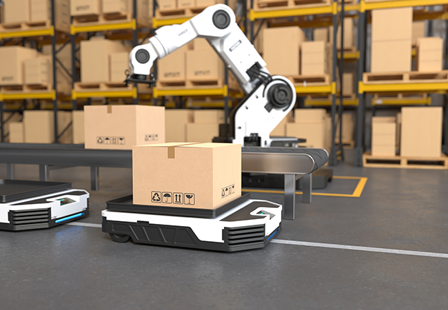

Automação Inteligente
Para sua Logística
Nosso robô é projetado para otimizar a movimentação de cargas, reduzindo erros e aumentando a eficiência no centro de distribuição.
Saiba Mais

Nosso robô é projetado para otimizar a movimentação de cargas, reduzindo erros e aumentando a eficiência no centro de distribuição.
Saiba MaisO RoboDistribuição é um sistema de automação avançado que auxilia na movimentação de cargas dentro de centros de distribuição. Com tecnologia de ponta, ele melhora a logística, reduzindo custos e otimizando processos.
Oferecemos consultoria em automação, integração com sistemas de gestão, suporte técnico e treinamento para operadores.
Entre em contato conosco para saber mais sobre como o RoboDistribuição pode revolucionar sua logística.
Email: contato@robodistribuicao.com
Telefone: (11) 97248-4618